Rap2入门
写在最前面
是什么？
是阿里妈妈前端团队出品，是一个接口可视化管理平台。
使用了Mock.js作为Mock引擎，用于前后端分离的开发模式中，根据约定接口自动生成模拟数据。
能解决什么问题
- 前端独立开发，不受后端接口开发进度的影响
- 无需前后端联调，避免频繁沟通，减少双方时间成本
- 支持生成随机的文本、数字、布尔值、日期、邮箱、链接、图片、颜色等模拟数据，可实现真实接口请求效果
最终目的
提升协作效率，少加班，少熬夜
快速上手
登录
打开Rap2官方服务站点rap2.taobao.org之后进行登录，新用户需要注册。
说明：rap2为开源项目，也可以通过下载官方源码，自行编译本地部署。rap2源码传送门
注意：公司内部用户请使用内部服务，数据进行了定期备份，更安全，更可靠。内部地址：http://xxx.xx.xxx.108:8887/ths-rap2，地址全路径请咨询组内人员
新建仓库
一般一个项目建立一个仓库，仓库中存放这个项目的所有接口。按照以下步骤进行操作:

操作说明：
- 新建仓库：发起仓库新建操作
- 仓库名称（必填）：建议与项目名称保持一致
- 简介（非必填）：对仓库名称进行补充描述
- 成员（非必填）：被添加的成员可以获得这个仓库内接口的操作权限，一般为这个项目的前后端开发人员
- 团队（非必填）：被添加的团队，团队内成员可以获得这个仓库内接口的操作权限
- 协同仓库ID（非必填）：在当前仓库中无法匹配到接口时，将会从协同仓库中寻找，便于大的项目按不同仓库拆分管理
新建模块
一般仓库下可以按照功能划分出来多个模块，每个模块放对应的接口，方便接口查找。按照以下步骤进行操作:
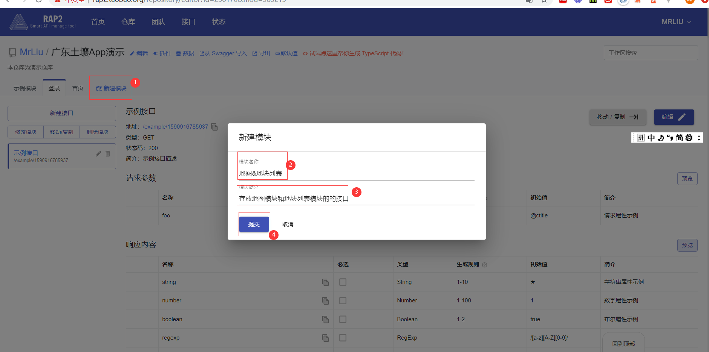
操作说明：
- 新建模块：发起模块新建操作
- 模块名称（必填）：这里的模块名称，可以按照功能划分
- 模块简介（非必填）：对模块名称进行补充描述
新建接口
按照以下步骤进行操作:
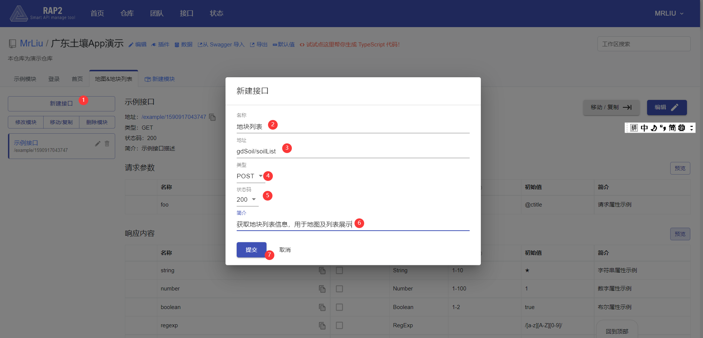
操作说明：
新建接口：发起接口新建操作
名称（必填）：接口文本描述
地址（必填）：接口的访问地址
类型：请求类型
请求码：http状态码
简介：对名称的补充描述
设置请求参数&响应结果
请求参数
示例数据JSON：
1 | { |
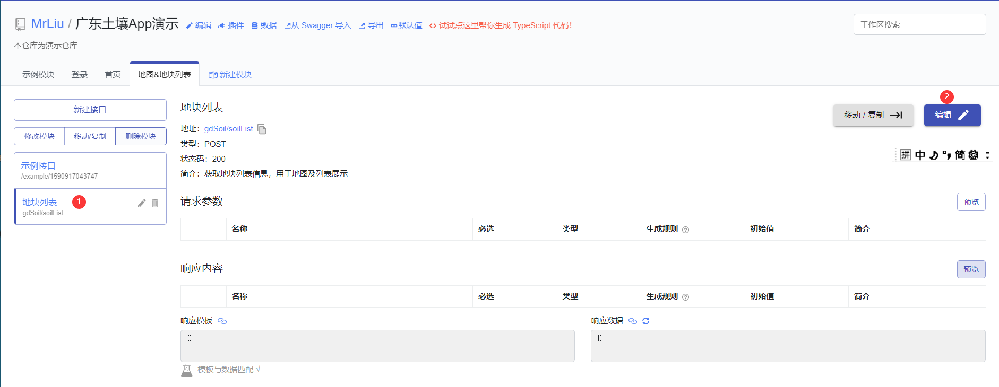
按照以上操作进入接口编辑状态
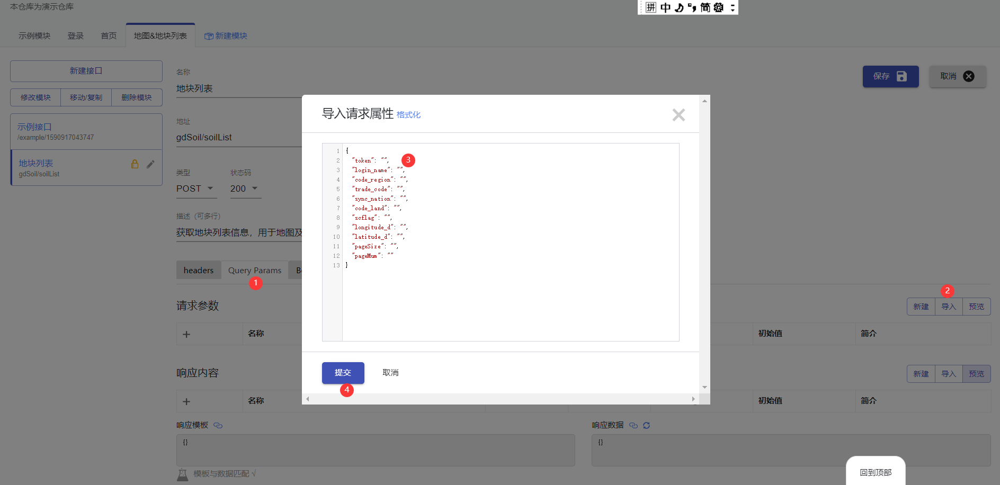
进入编辑状态后操作说明：
- 这个区域可以设置请求头，参数传输方式。这两个都需要提前跟后端沟通好
- 导入：该操作可以根据提前跟后端沟通定义好的JSON格式对象进行参数的快速导入
注意：也可以通过单行方式导入，具体参照下图
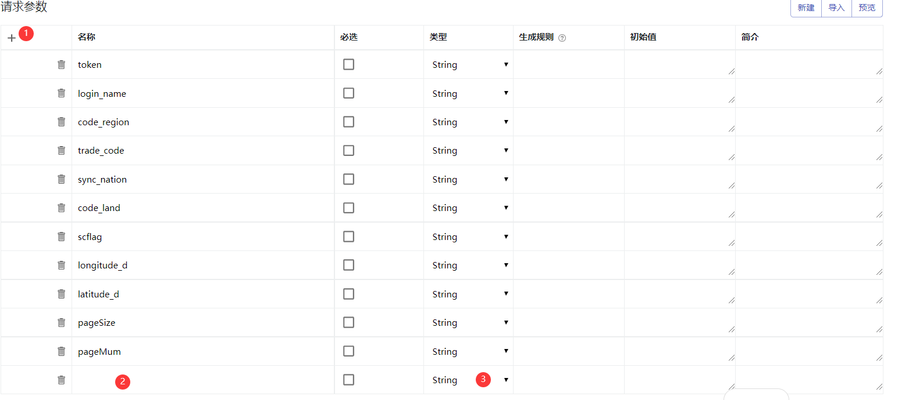
响应参数
示例数据JSON：
1 | { |
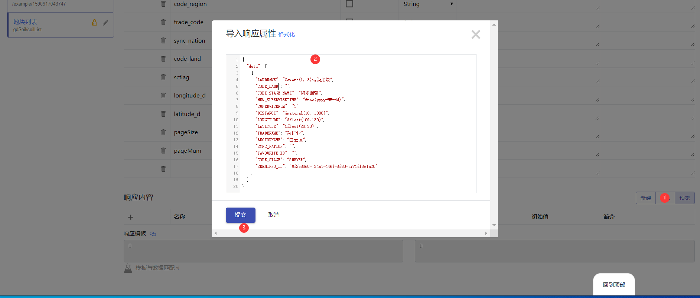
注意：所有设置完成后，记得点击右上角的保存，不然接口设置不生效
操作说明：
- 导入：该操作可以根据提前跟后端沟通定义好的JSON格式对象进行参数的快速导入
注意：也可以通过单行方式导入。
接口访问地址
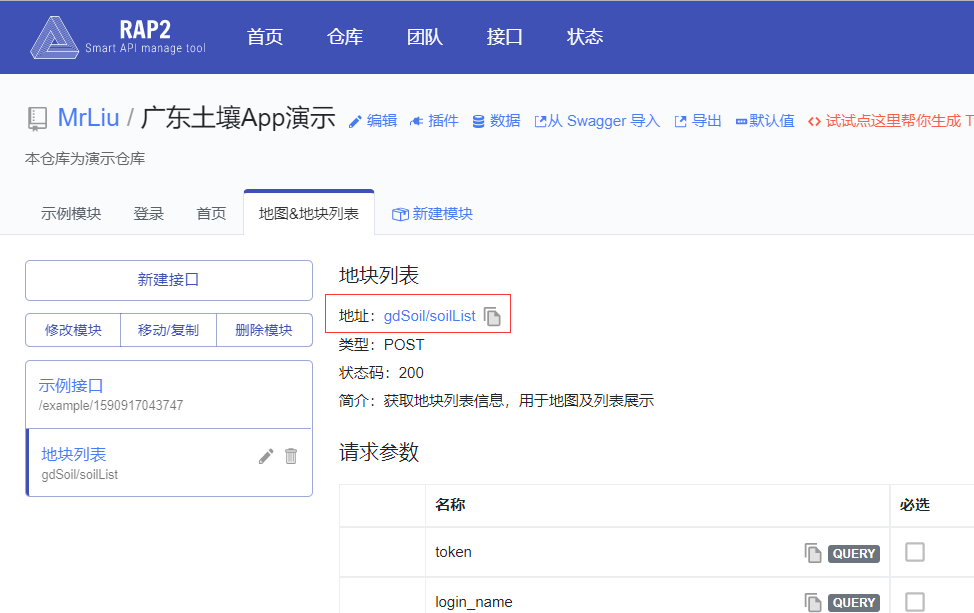
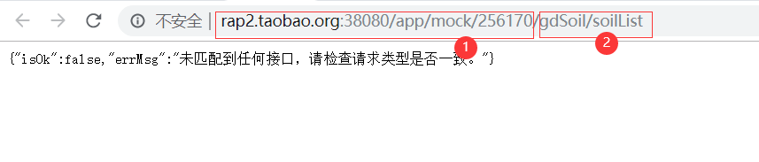
注意：由于演示地址为post 请求，必须在程序中或Postman等工具发起请求，这里只是为了获取到地址
地址说明：
基础地址：对应生成环境中的项目服务地址
接口地址：接口相对地址，定义时建议和实际接口保持一致，这样只需修改基础地址即可切换生产环境
到此为止，一个可以在程序中访问的模拟接口已经完成了
补充
看到这里，大家肯定有疑问，模拟随机数据怎么模拟的呢？上边一些截图中带@符号的是什么啊？我模拟数据是个列表，现在才生成一条啊。
下面为大家讲解下，两个比较重要的东西。生成规则和初始值
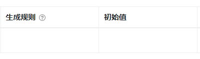
生成规则和初始值这两个是配合着使用的，也可以单独设置一个。在文章刚开始，讲到rap2使用了Mock.js作为Mock引擎,所以这两个的设置是遵循Mock.js 语法规范的。
比如快速上手部分例子，我们要让列表生成10条数据，如何设置呢？我们只需要把生成规则列设置成10就行了。
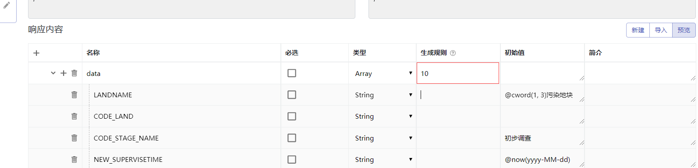
我是如何知道这个设置10可以生成10条数呢？查看Mockjs官方文档示例。传送门
再比如我们还想设置地块列表中地块名称为xxx污染地块，每一条都不一样，那就需要像上边截图中那样设置初始值了。@cword(1, 3)污染地块。传送门](http://mockjs.com/examples.html#Random.cword( pool?, min?, max? )))
Mockjs示例文档与Rap2设置对应关系说明（有其他模拟数据需求，都可以查看Mockjs给出的示例）:
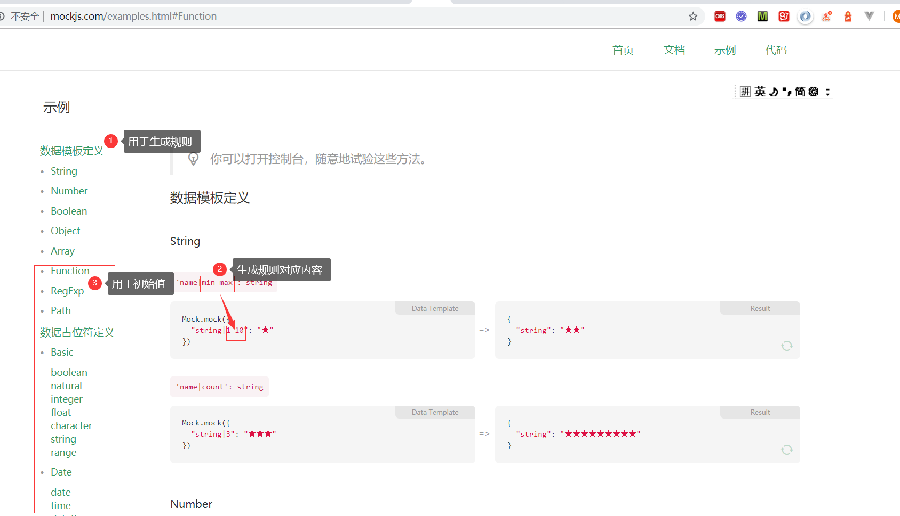